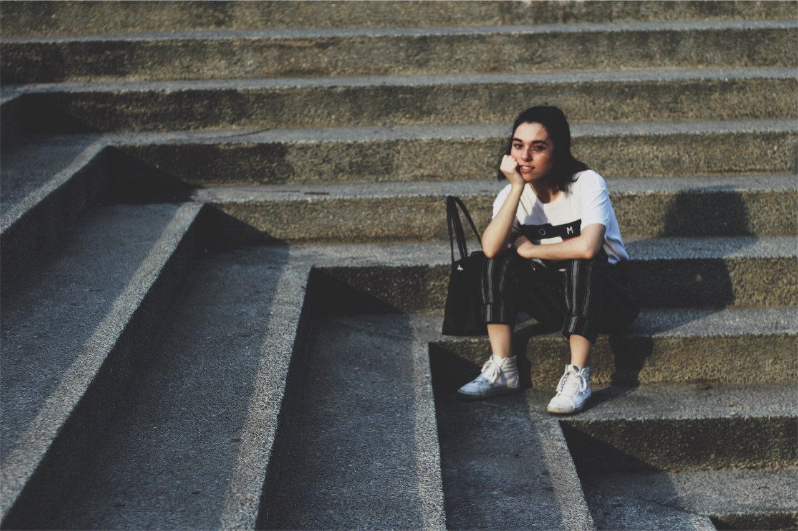
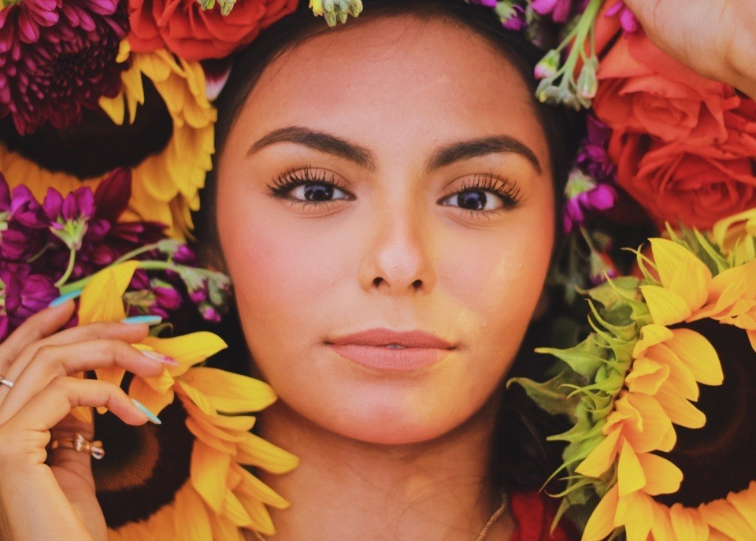
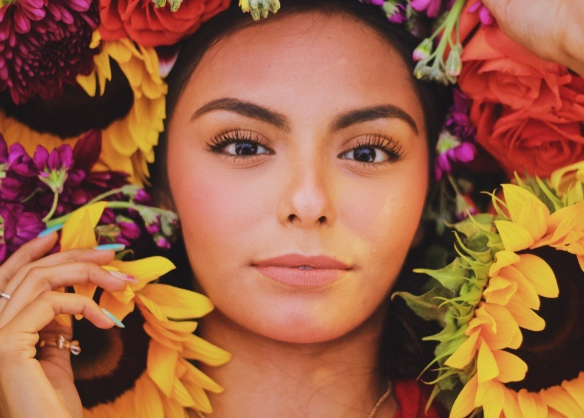
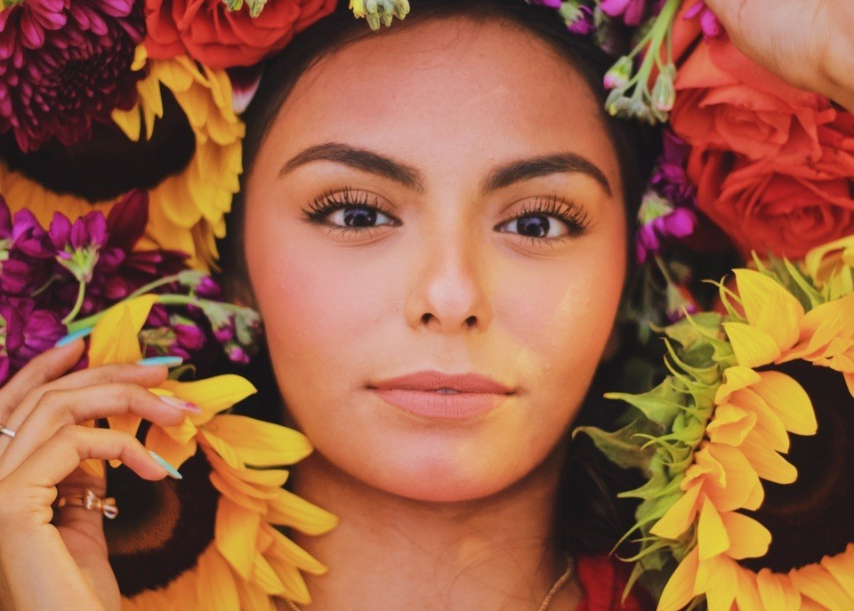

Portraits are a great way to be able to show
the personality of an individual and make them stand out. I take
portraits because I want the people that come to me to take their portraits
to be able to feel confident in theirselves. And with enough effort
on my part we can make that happen.“It’s one thing to make a picture of what a person looks like, it’s another thing to make a portrait of who they are.”
— Paul Caponigro
Landscapes
I am not just constrained to portraits! I very much enjoy
taking landscape pictures as well. These are just some of
the few landscape photos that I have taken and to show
that I also have skills in taking landscape pictures as well. Landscape
photography is a great way to capture a moment of beauty, but
can also be very difficult to be able to grasp the whole
beauty of it. I want to be able to share that beauty with everyone.
“Landscape photography is the supreme test of the photographer – and often the supreme disappointment.”
― Ansel Adams
Miscellaneous
These are just some of the pictures that I have taken
that had caught my eye. I believe there is a photo to be
taken everywhere you look. As long as there is light
a photo can and should be taken.
"All photographs are memento mori. To take a photograph is to participate in
another person’s (or thing’s) mortality, vulnerability, mutability. Precisely
by slicing out this moment and freezing it, all photographs testify to time’s
relentless melt."
― Susan Sontag

 
